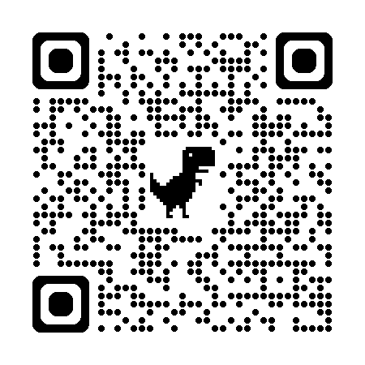
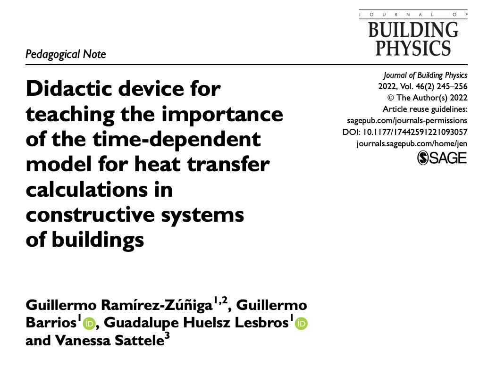
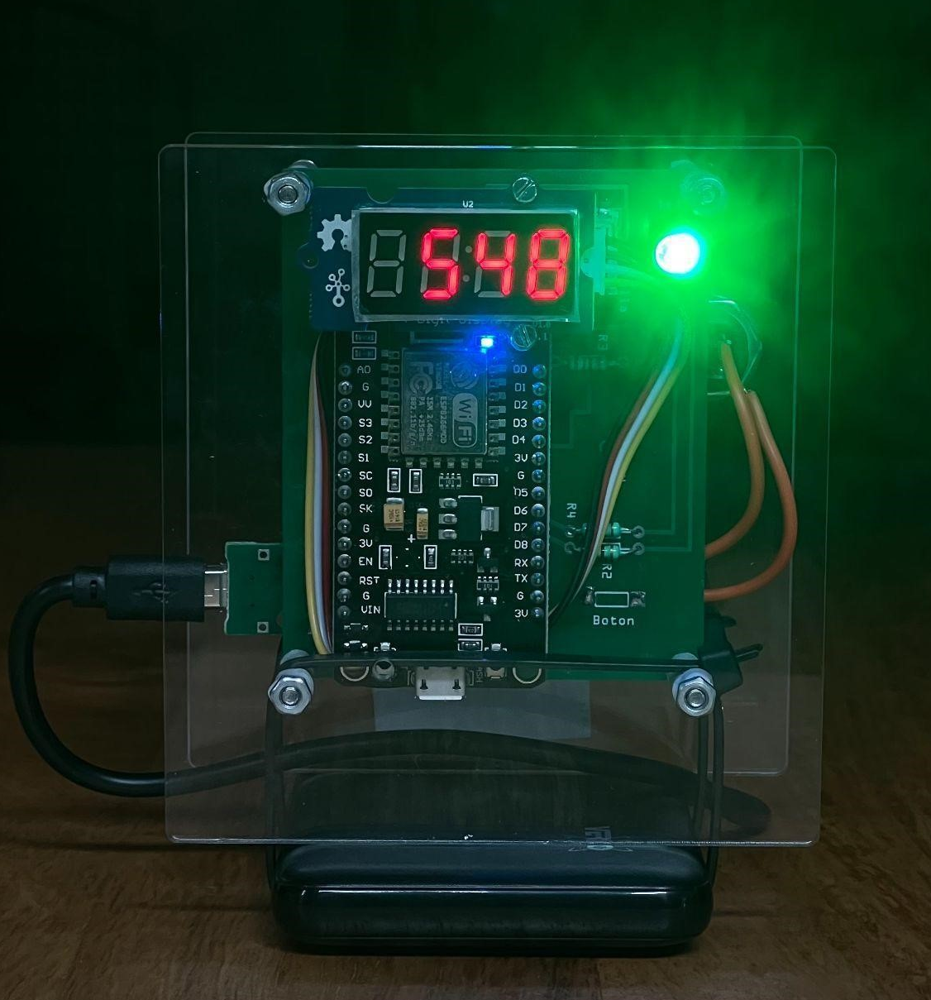
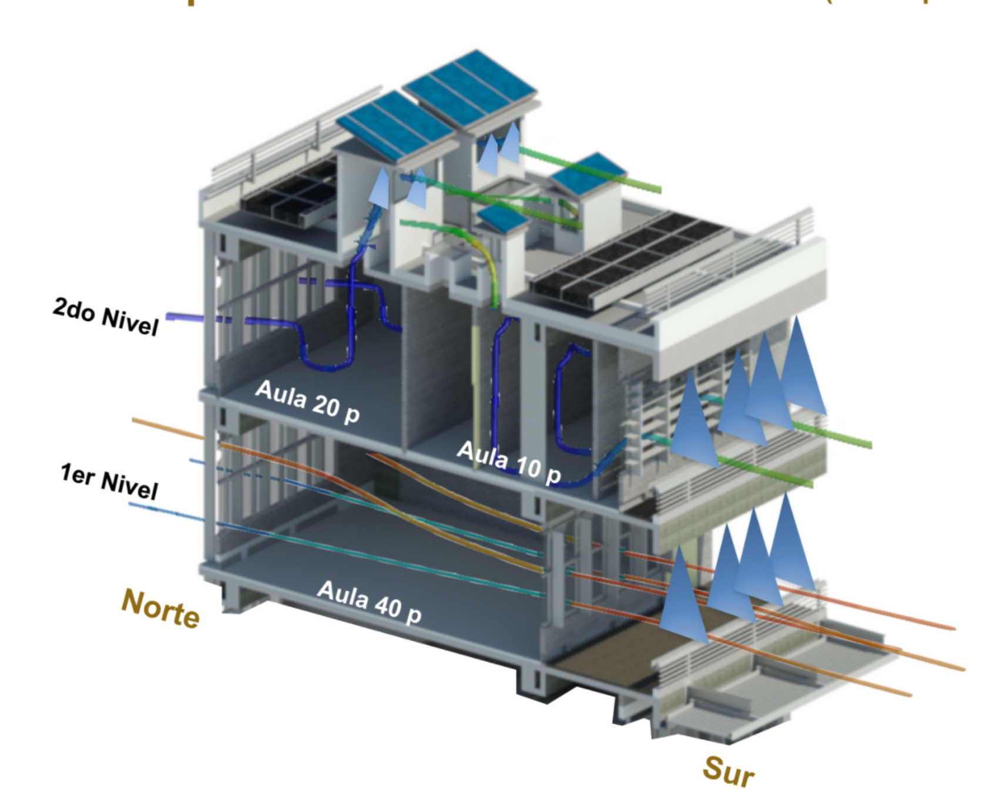
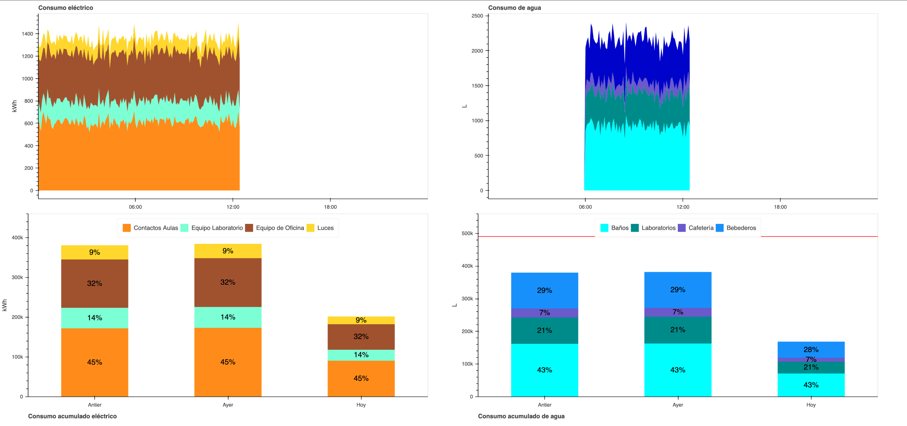
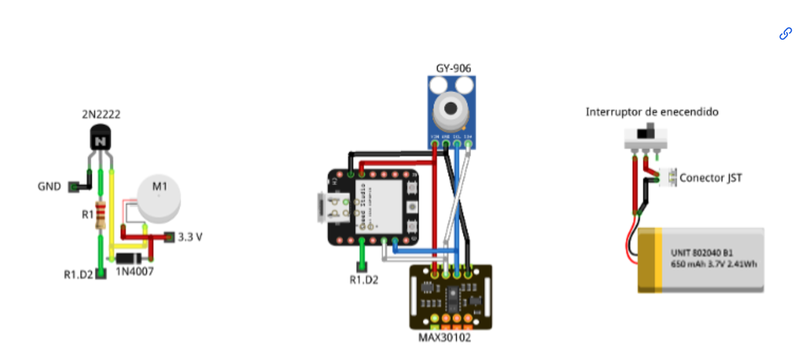
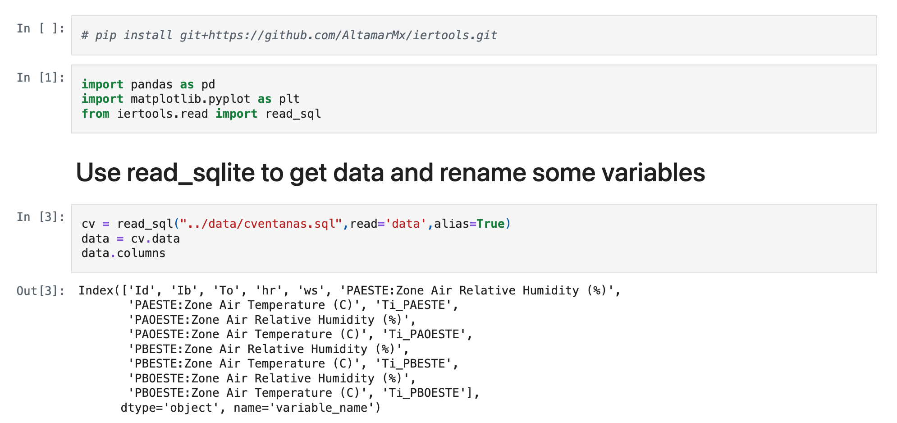
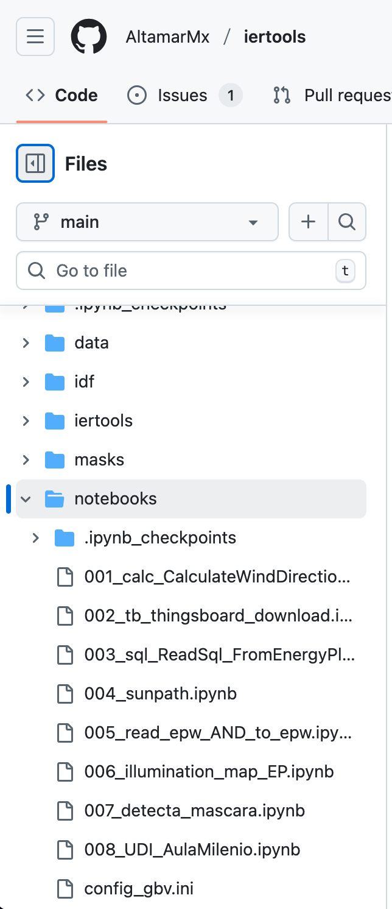
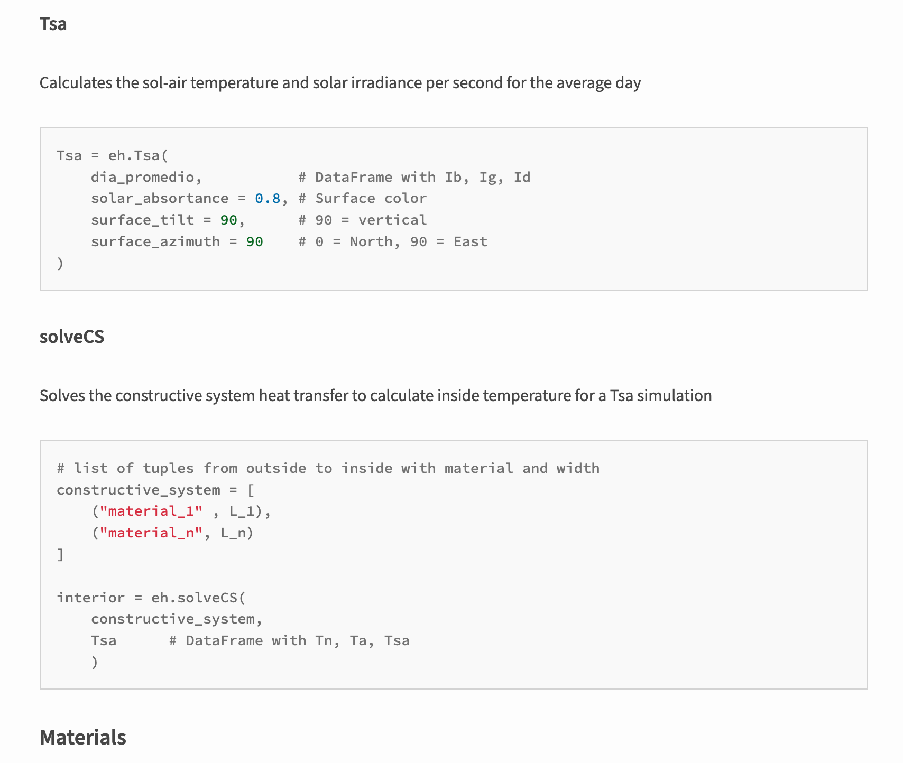
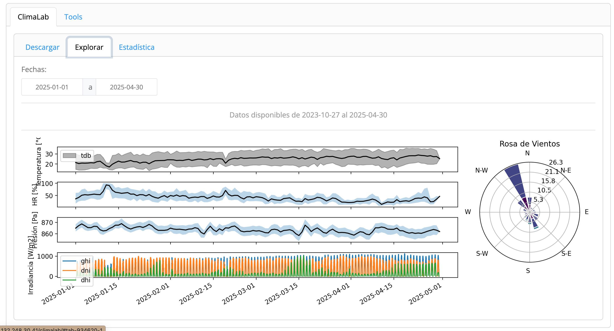

Desarrollos basados en hardware y software libre para la sostenibilidad
Guillermo Barrios del Valle
Tomen la presentación
Sostenibilidad
Capacidad de un sistemas socioecológico de perdurar y prosperar en el tiempo asegurando simultáneamente:
- Integridad ambiental
- Justicia y cohesión social con igualdad sustantiva
- Viabilidad económica de largo plazo
- Gobernanza institucional
¿Qué es la ciencia libre?
No es solo un PDF de acceso abierto
¿Qué es la ciencia libre?
No es un programa gratuito
¿Qué es la ciencia libre?
Según la UNESCO, la ciencia libre es un enfoque inclusivo que hace el conocimiento científico abierto, accesible y reutilizable para todos, incrementa la colaboración y abre la creación, evaluación y comunicación a actores más allá de la comunidad científica.
Acceso abierto a publicaciones, datos, código, equipo…
Ventajas de la ciencia libre
- Acceso y reutilización del conocimiento
- Más colaboración e intercambio
- Apertura a actores sociales
- Beneficios económicos y alto retorno
- Mayor eficacia y productividad
- Más investigación con los mismos datos
- Mayor impacto social y circulación
- Reducción de brechas
- Transparencia, control crítico y reproducibilidad
¿Qué es la ciencia libre?
Es una postura ética, filosófica y personal.
Lo personal es político
¿Cómo hacer ciencie libre en la academia?
- Usar sofware/hardware libre
- Documentar
- Otorgar licencias abiertas
- Datos, principios FAIR
Datos: F A I R
- Findable
- Accesible
- Interoperable
- Reproducible
Consulta los principios aquí
Primer desarrollo basado en hardware libre

- Raspberry pi
- Arduino Uno
- Shield de termopares
- Control de celdas peltier
- Pantalla touch
Hardware & Software libre @ IER
- Monitor CO2 en pandemia
- Ecosistema IER-Sustentable
- Tableros de datos en tiempo real
- Reloj inteligente para confort térmico
- Dispositivo campañas de confort térmico
- Mapas de luminancia con sofware libre
- iertools
- EnerHabitat
- ClimaLab
Monitor CO2 en pandemia

- ESP8266
- S8LP
- Alarma visual y sonora
- IoT
- Detección de fallos
- 3 sensores diferentes
- Datos de calibración compartida
Edificio bioclimático docencia

- Orientación
- Protecciones solares
- Colores y materiales
- Ventilación cruzada y nocturna
- Iluminación natural
- Enfriamiento evaporativo
- Enfriamiento radiativo
Monitoreo en tiempo real
- DTHIS: Temperatura, humedad, CO2, sonido, iluminacion
- DH2O: Consumo de agua
- DVentana: Apertura de ventanas
- DFP: Consumo eléctrico
- DTHIS-C: Dispositivo confort térmico para campañas
Todo conectado a IoT con ThingsBoard
Tableros de datos para literacidad bioclimática
Bokeh y Python
Reloj inteligente para confort térmico

- ESP32
- Arduino
- Pantalla táctil
- Temperatura piel
- Frecuencia cardiáca
- Encuesta confort simplificada
- IoT
- HardwareX
Reloj inteligente para confort térmico
iertools para energía en edificaciones
iertools para energía en edificaciones

- Lee sql de EnergyPlus
- Descarga datos de ThingsBoard
- Lee archivos EPW
- Grafica trayectorisa solar aparente
- Calcula UDI de Radiance
EnerHabitat

- \(\frac{dT}{dt}\)
- TDMA
- Climas de Mx
- Con y sin aa
- Configurable
ClimaLab
Herramientas usadas
- ESP8266, ESP32
- Raspberry Pi
- Arduino Uno WiFi
- Arduino IDE
- MicroPython
- CircuitPython
- Python
- Shiny
- Pandas
- Numba
- Git & GitHub
- Quarto
Ciencia Abierta, una ventana en la ingeniería, FIE, Universidad de Colima